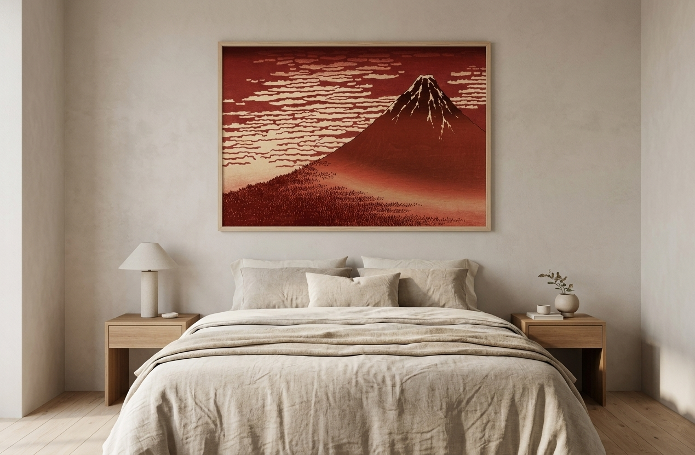

A gallery-quality canvas reproduction of Hokusai's "Fine Wind, Clear Morning" — better known as Red Fuji, from the same series as The Great Wave.

Part of Hokusai's "Thirty-Six Views of Mount Fuji" series — calmer than the wave, but just as iconic among collectors.
Deep reds and warm neutrals make it a natural fit for a bedroom or reading nook, unlike the cooler tones of ocean-themed art.
Printed on canvas and made in the USA — no framing needed, just find a wall.
This print captures Mount Fuji glowing red under a clear morning sky — a moment of stillness rather than drama, making it a natural fit above a headboard or reading chair.
Its warm tones pair especially well with linen bedding, wood furniture, and other earthy neutrals.
Warm tones make it a natural headboard-height focal point.
A calm backdrop for a chair, lamp, and stack of books.
Displayed together, both prints tell the story of Hokusai's Fuji series.
Multiple width and height options are available — check the product page for current sizing.
No — it's a gallery-wrapped canvas print, ready to hang as-is.
Yes — both are from Hokusai's "Thirty-Six Views of Mount Fuji," making them a natural pair.
A ready-to-hang canvas reproduction of Hokusai's Red Fuji — see current pricing and availability on Amazon.
Check Price on Amazon →